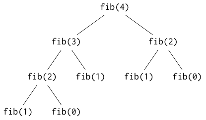

Functions¶
Functions, in some form, are the prime abstraction mechanism of all programming languages. They are also called procedures, (sub-)routines or, in some cases, methods. With functions, you can name a piece of code and use that name to execute the code in multiple places in your program. To make this mechanism even more usable, the code in functions can receive values that are specified by the user of the function and return a value that can be utilized by the user.
Basic usage¶
The following program defines and uses a function called print_sepline that
prints a separator line to std::cout:
#include <iostream>
void print_sepline()
{
const auto sep_char = '-';
const auto sep_len = 60u;
for (auto i = 0u; i < sep_len; ++i)
std::cout << sep_char;
std::cout << '\n';
}
int main()
{
std::cout << "Above separator lines.\n";
print_sepline();
std::cout << "Between separator lines.\n";
print_sepline();
std::cout << "Below separator lines.\n";
}
The program’s output is:
Above separator lines.
------------------------------------------------------------
Between separator lines.
------------------------------------------------------------
Below separator lines.
The first new thing is the definition of the function. It start with the functions head:
void print_sepline()
This means that we want to define a function that returns nothing (void),
is called print_sepline and takes no input. (If this reminds you of int
main(), you’re completely right, but hold on until we cover the specialities
of the main function.) The rules for function names are the same as for
variable names. In practice, function names should be verbs while
variable names should be nouns.
Next, there is the function’s body, enclosed in curly braces {}.
These are the statements that get executed when the function is called.
There are two such calls in the main program, looking like this:
print_sepline();
The empty parentheses discriminate them from ordinary references to variables.
What happens when you call a function? First the exact location of the current processor instruction is remembered as the return address. Then execution jumps to the beginning of the function’s body. After executing it, the previously remembered return address is used to jump back and execution continues in the calling function (the main program, in the above example).
One thing to note is that when execution jumps to the called function (the callee) the calling function’s (the caller‘s) scope is left and the callee’s, is entered. Then, after completing the callee’s body, execution resumes in the callers scope. At runtime, this involves creating all variables defined inside the callee (reserving memory for them) when it is entered and destroying them (freeing the memory for them so that it can be reused later) when it exits (but not when it is just temporarily left for calling another function). This will be detailed further, when we also know about input parameters and return values.
Parameters and arguments¶
Often, we do not want to do exactly the same thing multiple times but reuse a
certain behaviour with some small variations. That’s where function parameters
come in. For example, for print_sepline we could want to parametrize the
length of the separator line and the character of which it is made. The
following program demonstrates that:
#include <iostream>
void print_sepline(char sep_char, unsigned sep_len)
{
for (auto i = 0u; i < sep_len; ++i)
std::cout << sep_char;
std::cout << '\n';
}
int main()
{
std::cout << "First separator line:\n";
print_sepline('=', 60);
std::cout << "Second separator line:\n";
print_sepline('_', 80 / 4);
char sepline_char;
std::cout << "Enter separator character: ";
std::cin >> sepline_char;
unsigned sepline_length;
std::cout << "Enter length of separator line: ";
std::cin >> sepline_length;
std::cout << "Your custom seperator line:\n";
print_sepline(sepline_char, sepline_length);
std::cout << "Double the length:\n";
print_sepline(sepline_char, sepline_length * 2);
}
Example output:
First separator line:
============================================================
Second separator line:
____________________
Enter separator character: ~
Enter length of separator line: 35
Your custom separator line:
~~~~~~~~~~~~~~~~~~~~~~~~~~~~~~~~~~~
Double the length:
~~~~~~~~~~~~~~~~~~~~~~~~~~~~~~~~~~~~~~~~~~~~~~~~~~~~~~~~~~~~~~~~~~~~~~
Now print_sepline is defined as a function that takes two parameters
(also called formal parameters or formal arguments). These
parameters, in this case the char parameter sep_char and the
unsigned parameter sep_len, are like ordinary variables inside
print_sepline, but they are not initialized inside this function but by the
caller. This can easily be seen in the highlighted lines in main where the
arguments (also called actual arguments or actual
parameters) for the parameters are supplied. These can be any expressions whose
value can be converted to the parameter type. Which argument initializes which
value is determined by the order. The first argument (in this case e.g.
'=') initializes the first parameter (in this case sep_char), the second
argument (in this case e.g. 60) the second parameter (in this case
sep_len) and so on.
Note
Often you will find that people mix up the terms parameter and argument and use them like they were synonyms.
Note that parameters must always be explicitly typed, so auto can’t be used
there. The reason is (mainly) that functions can be called from different places
with arguments of different types, e.g.:
void f(auto x) { } // auto invalid here!
int main()
{
f(1); // int
f(1u); // unsigned
}
Default arguments¶
A nice and simple feature of C++ are function default arguments. The
print_sepline function is a good example: Probably we want to use the same
separator line most of the time, and always needing to specify all parameters is
cumbersome. To remedy this, we can define print_sepline as follows:
void print_sepline(char sep_char = '~', unsigned sep_len = 80)
{
// ... (as before)
}
Now we can can call the function like this:
print_sepline();
to print a line with 80 tildes (“~”). We can also specify the first argument to use defaults only for all arguments after that or we can just specify all arguments:
print_sepline('_'); // 80 * '_'
print_sepline('=', 30); // 30 * '='
If we concluded that there is no sensible default for sep_char, we could
also have provided a default argument only for sep_len when defining
print_sepline:
void print_sepline(char sep_char, unsigned sep_len = 80) { /* ... */ }
However, we could not define the function like this:
void print_sepline(char sep_char = '~', unsigned sep_len) { /* ... */ }
This would mean that the second argument must always be provided but the first can be left out but it is logically impossible to have a second argument without a first one. Thus, when a parameter has a default argument value, C++ requires all parameters after that to also have a default, i.e. the default arguments must always come at the end.
Pass by value¶
What does the following program print?
#include <iostream>
void f(int y)
{
std::cout << "entered f: " << y << '\n';
y = 23;
std::cout << "leaving f: " << y << '\n';
}
void g(int x)
{
std::cout << "entered g: " << x << '\n';
x = 23;
std::cout << "leaving g: " << x << '\n';
}
int main()
{
auto x = 42;
f(x);
std::cout << "after f: " << x << '\n';
g(x);
std::cout << "after g: " << x << '\n';
}
Parameters of functions are, as said above, variables inside the callee that are
initialized by the caller. This implies that the values the caller supplies must
be copied to the variables of the callee, since any expression and not only
variables can be used as arguments for the parameter variable. Thus, f and
g in the program above only change their own copies of their arguments, but
the x variable in main remains unchanged, leading to the output:
entered f: 42
leaving f: 23
after f: 42
entered g: 42
leaving g: 23
after g: 42
It does not matter that the names of g‘s parameter and the variable that is
supplied as the argument expression match ‒ they are still distinct variables
with their own memory locations.
Note
Because only the values of the argument expression are passed to the callee and not a variable including memory location, the behavior described in this section is called pass by value.
Return values¶
Function cannot only receive arguments, they can also return a value. For example, the following program uses a function to compute the square of a number:
#include <iostream>
double sqr(double n)
{
return n * n;
}
int main()
{
auto x = 5.;
std::cout << x << " squared: " << sqr(x) << '\n';
std::cout << x << " to the 4th power: " << sqr(sqr(x)) << '\n';
const auto pi = 3.14159265359;
auto radius = 5;
std::cout "area of circle with r=" << r << ": " << sqr(r) * pi;
}
The return value’s type (here double) takes the place where formerly we have
always written void. Inside the function, the return keyword is used to
return the desired value. The syntax is return expression, where
expression must have a type convertible to the specified return type. This then
becomes the value that the caller receives: the function call (e.g. sqr(n))
can then be used anywhere in expressions, like a literal of the same type.
Of course, a function with return value is not restricted to a single return
statement. For example, we could put the calculation of the factorial inside a function:
unsigned long long factorial(unsigned long long n)
{
auto result = 1uLL;
for (auto i = 1uLL; i <= n; ++i)
result *= i;
return result;
}
main‘s return value¶
You might now wonder what’s up with the return value of main which should be
an int. Why didn’t we have to return anything? And who gets to process this
return value anyway?
The return value of main is passed to the operating system. You can print
it in the terminal/command prompt after running your program by typing echo
%ERRORLEVEL% on Windows or echo $? on Linux. It is conventionally used to
indicate success or failure (and sometimes the kind of error) of the program.
Zero indicates success and any other value usually means failure. As for why we
didn’t had to return anything from main: There is a special rule for this
function that says that if you don’t return a value from main, zero is
returned automatically. Indeed, if you want to indicate failure, you can return
something different, or, if you like, you can also return zero manually.
return as a control flow statement¶
Return can be used not only at the end of a function, but anywhere. It can also
be used multiple times. Apart from returning a value for non-void functions,
return is to functions what break is to loops (and to switch).
For example, we could use return in main to abort the program on invalid
input (See Checking if std::cin succeeded):
#include <iostream>
int main()
{
int x;
std::cout << "Enter x: ";
if (!(std::cin >> x)) {
std::cout << "E: Invalid number.\n";
return 1;
}
if (x == 0) {
std::cout << "E: x is zero.\n";
return 1;
}
std::cout << "Reciprocal: " << 1 / x << '\n';
//return 0; // Inserted automatically by the compiler.
}
Warning
Note the parantheses around std::cin >> x. If they were left
out, the code would be evaluated as (!std::cin) >> x. Unfortunately, this
is not a compiler error but has an undesired meaning (e.g. it leaves x
uninitialized).
Another common usage of return is to return from a function as soon as you
“found” something, e.g. in the following (inefficient) function next_prime:
unsigned next_prime(unsigned start, unsigned max)
{
for (auto i = start; i <= max; ++i) {
if (is_prime(i)) // Left as an exercise to the reader.
return i;
}
return 0; // No prime found.
}
Without return we would have to use break (or, even more verbose, a
boolean control variable) and define a result variable outside the loop, taking
care that 0 is returned when no prime has been found.outside the loop,
taking care that 0 is returned when no prime has been found.
return can also be used for the “guard pattern”, to return from a function
as soon as you detect that a parameter is invalid:
bool print_quotient(double x, double y)
{
if (y == 0)
return false;
std::cout << x << '/' << y '=' << x / y << '\n';
return true;
}
return can also be used in void functions, but of course you may not
specify a value then. The following silly example demonstrates that:
void f(int x)
{
std::cout << "Before return.\n";
if (x == 42)
return;
std::cout << "After return.\n";
}
Note
Often you will hear that a function should have exactly one exit
point, and thus no return except for one at the end. While it is certainly
true that too many returns (and breaks and continues)
obfuscate your code, I think that this applies even more to deeply nested
if/else and extra control variables. A good way to avoid both is to
break up a function into smaller functions so that e.g. wrapping half the
function in a if is feasible.
Changing parameters and references¶
Pass by reference¶
Sometimes you need to return more than one value, or want to change a parameter
so that the change effects the variable that the caller passed (because your
function would otherwise always be used like x = f(x) anyway). That’s where
reference parameters can be used. For example:
#include <iostream>
void absolutize(int& v)
{
if (v < 0)
v = -v; // Make v positive
}
int main()
{
int x;
std::cout << "x: ";
std::cin >> x;
absolutize(x);
std::cout << "absolutized x: " << x << '\n';
}
To make a parameter a reference parameter, write a & (ampersand) after the
type. With a reference parameter, not a value but a reference to the passed
object is passed (pass by reference). This way,
the arguments must not be arbitrary expressions but actual variables, or, more
precisely, lvalues. For example, you cannot call absolutize(x + 3)
since the + operator returns a rvalue. The names lvalue and rvalue
stem from the fact that a lvalue may appear on the left side of an assignment
operator, while a rvalue may only appear only on the right side. This is also an
intuitive way of distinguishing them: when looking at x + 3 = 4 it should be
immediately clear that this assignment makes no sense, so absolutize(x + 3)
does not make sense either. It is only logical that the rules for assignment and
reference parameters are the same, since the special thing about reference
parameters is that you can assign to them affecting the argument passed. You
also cannot pass const variables as reference arguments, which makes sense
when you think about it: If this was allowed, a “constant” could be changed by
passing it to a function by reference.
A use case for multiple return values could be a function that returns both the minimum and the maximum of its parameters:
#include <iostream>
void minmax(int x, int y, int& min, int& max)
{
if (x < y) {
min = x;
max = y;
} else {
min = y;
max = x;
}
}
int main()
{
int a = 42, b = 14;
int lo, hi;
minmax(a, b, lo, hi);
std::cout << "Lower: " << lo << '\n';
std::cout << "Higher: " << hi << '\n';
}
Task: Sorting three numbers with a swap function
In a previous task, you wrote a program to sort three numbers. Improve this program by writing a function that swaps two numbers and replace all manual swaps in the program with it. Think about:
- how to call the function that does the swapping
- what signature (arguments and return values) the function should have
When you are done, evaluate the improvements:
- Is the program shorter than the original? Or even longer?
- What about the readability of the program?
- What would change in your evaluation if you adapted the shorter program that swaps just three numbers instead?
(Solution)
Reference types¶
In fact, the & is a so called declarator, meaning it can be
attached to a type and “creates” a new type. That is, int& is a type on it’s
own, (slightly) distinct from plain int. This means that you can define
variables of that type, but you must immediately initialize them with another
variable:
int x = 2;
int& rx = x; // rx and x refer to the same object (and thus memory location)
rx = 4; // Also affects x
int y = x; // y is a new object whose value is initialized to x'
y = 0; // Only affects y
rx = y; // rx still refers to x, so rx and x are both set to 0.
You can also do that with auto by attaching the & to it:
int x = 2;
auto& rx = x;
// …
Note
There is no such thing as a reference to a reference:
auto& r2x = rx;
is still just an ordinary reference to the same object as rx: x.
This can be useful in conjunction with ?: to select a variable that should
be changed:
auto& r = c ? x : y;
Now changing r will change x or y, depending on c.
Warning
Do not return references to variables inside functions (including to non-reference parameters). For example, the following causes undefined behavior:
int& f()
{
int somevar = 4;
return somevar;
}
int& g(int someparam)
{
return someparam;
}
After f and g return, the memory for their variables is freed and/or
reused so that the return value will refer to invalid memory or, worse, memory
that now holds an entirely different object. Your compiler should warn you
about this error.
Why are functions useful?¶
There are many problems you can (mostly) avoid by using functions:
- Having to write the same or nearly the same code over and over again (you write it once in a function and just call it multiple times)
- Having to read the same code over and over again (you read the function once).
- Having to fix the same problem or make the same improvement in several places in a program (you fix/improve the just the function).
- Having a huge
main()function (you split it into multiple functions that are called from it). - Having deeply nested control structures (you flatten them by splitting them into multiple functions).
- Having absolutely no idea what some piece of code does (with functions, the name should you give at least the basic idea).
Global variables and why you should not use them¶
Until now, we have only seen variables that were defined inside functions
(including main). This makes them local variables. The opposite are
global variables which are defined outside functions. Their scope extends
from the definition to the end of the file and they can thus be accessed by all
functions in this area. Global variables are usually a bad idea because
- If you find that your global variable has a unexpected value, you have to check all functions that can access it to find the cause.
- It hides the actual inputs and outputs of functions: Parameters and return values are always better than global variables.
A bad example would be following:
#include <iostream>
int g_sum = 0;
void add_to_sum(int x)
{
g_sum += x;
}
void double_sum()
{
g_sum *= 2;
}
int main()
{
add_to_sum(32);
double_sum();
add_to_sum(12);
std::cout << "sum = " << g_sum << '\n';
}
This would better be rewritten using reference parameters, and a local sum
in main.
However, having a global constant like π is usually no problem: The first of the aforementioned problem does not apply for any constant since a constant cannot be changed and the second does apply to constants like pi since a dependency on pi is more or less a dependency on “the reality”. In general however, deciding whether or not a global constant hides an input that should better be made explicit requires a bit of experience. A good rule of thumb is to ask the question: Is it ever possible that I need to have different constants/values for different calls in the same program? If you can answer this with true, you should definitely use a parameter.
Note
std::cout and std::cin are global variables. Since the
standard output and input stream to which they refer can exist only once per
program and in many programs many functions will refer to them, this can be
considered acceptable. However it is still annoying when some function you
want to only return a value suddenly prints an error message to the screen
instead of e.g. reporting the error to the caller using a special return
value. This could not happen if std::cout was not globally available.
Side effects and their order¶
If you looked carefully at the functions with return values and the functions
without one you may have noticed a fundamental difference: The functions with
return value we wrote have no effect at all apart from returning a value. The
void functions on the other hand did have an effect: They wrote to
std::cout. Such side effects could also include reading from
std::cin or maybe playing a sound, rendering an image or changing a global
variable or an reference parameter.
Now there’s a gotcha in C++: If you call multiple functions in the same statement, the order in which they are executed is not necessarily defined. That is, for example in the stament:
auto y = f(x) - g(x);
it is up to the compiler to decide whether to evaluate the call to f or to
g first. This freedom for the compiler is one of the things that are pretty
unique to C and C++ among today’s commonly used programming languages. It
allows the compiler to generate more efficient code but also forces programmers
to be careful about side effects. For example, if f and g above changed a
global variable, the final value of that variable after the above statement is
undefined: it might e.g. depend on the compiler and the compiler options. Also
if f and g wrote to std::cout, this means that the order in which
this output is written is undefined. If x was a reference parameter that was
changed, it’s value would be undefined, and so on. In fact, you can even get
yourself in trouble without using functions:
auto y = 2 * x / ++x;
The behaviour of this code is undefined: It depends on whether the compiler
decides to emit the code for incrementing x or doubling it first. The culprit
is, of course, that the ++ operator has the side effect of incrementing
x.
Other patterns to watch out for are
f(g(), h());
and
f(g(), h(q(x)));
For the first, the following orders of evaluation are possible:
g h f
h g f
and for the second one, the code has to be prepared for:
g q h f
q h g f
q g h f
Especially the last possibility is one that people often miss.
To avoid these problems, you should stick to the following guidelines:
- As an implementor of functions: If a function returns a value that is meant to be used in a complex expression (i.e. something other than an success indicator or an error code) it should be side effect free.
- As a user of functions: If you call functions with side effects you should
either call each in it’s own statement (saving the result in a variable), or
make sure that the order of side effects does not matter (e.g. it would
probably be irrelevant in which order
gorhwrote to a log file).
Short circuit evaluation and ?:¶
An exception to the rule that the order of evaluation within one expression is
undefined is the conditional operator ?:: It is guaranteed that the
condition will be evaluated first and then only the selected expression will be
evaluated, meaning that any side effects the other might have are not executed.
Another exception is the so called short circuit evaluation of logical
and && and logical or ||. Since in the expression x && y the result
can only be false if x is already false, y is not evaluated in
that case. Similarly for x || y, if x is true, y needs not to be
and is not evaluated. This means, for example, that the following will never
cause a division by zero:
if (x != 0 && 1 / x < 0.5)
// Do something.
It also means that in expressions like f() || g() the only possible
evaluation “orders” are f g and just f.
Background Information: The stack¶
The main memory (RAM) that your program sees is divided into three areas:
- The heap/free store, to which we will come later.
- The area in which global variables and constants are stored.
- The stack, on which local variables and return addresses are stored.
We will take a closer look on the stack, because understanding the stack helps understanding how functions work.
In general a stack is a collection of data objects that supports at least two operations:
- You can push an object on the stack. This object then becomes the stack’s top.
- You can pop the top object from the stack, i.e. remove it.
These operations give the stack its name because like e.g. a stack of books, you can only add things to and remove them from the top. A minimal stack often supports only access to the top element, but on the stack you can access (both read and write) any object. The data objects on the stack are local variables, return addresses and also return values of functions.
Consider e.g. the factorial function, repeated here for your convenience:
unsigned long long factorial(unsigned long long n)
{
auto result = 1uLL;
for (auto i = 1uLL; i <= n; ++i)
result *= i;
return result;
}
Let’s call this from a main like the following:
int main()
{
auto n = 4uLL;
auto fn = factorial(n);
auto f2 = factorial(n / 2);
}
The stack before calling factorial the first time might look like the
following:
undefined ← f2, top
undefined ← fn
4 ← n
return address from main to operating system
Note that I have only added the variable names after ← to make this easier
to read: In reality, the stack contains only the plain values, nothing else.
There really is a record of where the stack’s top currently is (called
stack pointer), but this is of course not on the stack itself but in a
special memory area on the processor.
Then, in order to call factorial, the return address, i.e. where it should
continue afterwards is pushed. Note that this return address is more exact than
to a single C++ statement, it contains excactly where to continue program
execution after returning from the callee, which could be in the middle of
evaluating an expression. In addition to the return address, the arguments are
pushed, so the stack might then look like this:
4 (argument to factorial) ← top
return address to main
undefined ← f2
undefined ← fn
4 ← n
return address from main to operating system
Then factorial is called. (One of) the first thing(s) factorial does is
reserving stack space for its local variables, so the stack looks like this:
undefined ← factorial/i, top
undefined ← factorial/result
4 ← factorial/n
return address to main
undefined ← main/f2
undefined ← main/fn
4 ← main/n
return address from main to operating system
Note that there are now not only the variables of main but simultaneously
the ones from factorial on the stack. The part of a stack that belongs to a
function is called its stack frame. factorial‘s stack frame extends
from the top to the return address to main (inclusive) and main‘s is
everything below.
Then, after returning, main is left with this stack:
24 (factorial's return value) ← top
undefined ← main/f2
undefined ← main/fn
4 ← main/n
return address from main to operating system
What main now does is assigning the return value to fn and then popping
it:
undefined ← main/f2, top
24 ← main/fn
4 ← main/n
return address from main to operating system
The same process repeats for the second call. Note, however, that of course the
return address given to factorial is different from before, as is the
argument and hence the return value.
Note
This was a conceptual explanation of how the stack works. In practice, this is one area where the compiler might do lots of optimizations: For example, it often uses the memory that is directly on the CPU (the registers) instead of the stack for local variables while a function is active (it has to save them to the stack before calling anything because the callee might use the registers too) or return values, or it uses the values returned directly as variables instead of copying the value and then popping the original. If you are interested, you migth want to research the keyword calling convention.
For reference parameters, not the value is pushed on the stack, but the address of the variable.
Recursion¶
An interesting programming technique using functions is recursion. Recursion can be a confusing concept at first; a common joke is that in order to understand recursion, you must first understand recursion.
The definition of recursion is rather simple: A function is recursive if it calls itself.
A simple recursion: Factorials¶
As an example, we might implement the factorial function using recursion:
unsigned long long factorial(unsigned long long n)
{
return n == 0 ? 1 : n * factorial(n - 1);
}
Note
If you have trouble reading this application of the ternary
operator ?:, here is an alternative way to write
the function’s body:
if (n == 0)
return 1;
else
return n * factorial(n - 1);
For comparison, here is the body of the original factorial function:
auto result = 1uLL;
for (auto i = 1uLL; i <= n; ++i)
result *= i;
return result;
Obviously the recursive definition is much shorter, which is often an advantage
of recursion. A disadvantage of recursion which probably hits you right now is
that it can be harder to understand. So let’s examine step by step what happens
for a call to factorial(3):
First, factorial(3) checks, if n is zero which is not the case, so the
expression n * factorial(n - 1) is evaluated instead, which is 3 *
factorial(2). In order to evaluate this expression, factorial gets called
again, this time with the parameter n being 2. Again, it checks for n
== 0, and again the check is false, and this time, 2 * factorial(1) is
evaluated. The same happens in factorial(1), since 1 is still not equal
to 0. Only factorial(0) can finally calculate a result without relying
on another call to factorial. This result 1 is now returned to
factorial(1) which can now return 1 * 1, which is 1 to
factorial(2) which, again, happily returns 2 * 1 = 2 and finally
factorial(3) can return 3 * 2 = 6 to its caller.
You see, from a technical perspective, a recursive function call is no different
than any other function call. For each call, the return address, arguments and
local variables (if any) are pushed on the stack. So
for example, before factorial(0) returns, the stack might look as follows:
0 ← factorial(0)/n, top
return address to factorial(1)
1 ← factorial(1)/n
return address to factorial(2)
2 ← factorial(2)/n
return address to factorial(3)
3 ← factorial(3)/n
return address to factorial(3)'s caller
Of course, there is not really a function like factorial(0) or
factorial(2), there is only the factorial(unsigned long long n) we
defined. In fact, all the return addresses to any factorial(n) above are
exactly equal. What distinguishes e.g. factorial(0) from factorial(2) is
only the value of the local variable n. Pushing otherwise redundant return
addresses allows recursive calls to be treated in exactly the same way as
any other function call.
From the above stack, you can already see a disadvantage of recursion: It needs
more space on the stack than an implementation using loops (an iterative
implementation). In fact, it does not even need just a constant amount of bytes
more but the additional space it needs depends, in the case of factorial(n)
on the input parameter n, while the iterative implementation always uses the
same amount of stack space, regardless of n. Because the stack is usually
limited too a far smaller size than the available RAM (e.g. just two Megabytes
with MSVC’s default configuration), calling the recursive implementation of
factorial with a too big number can lead to a stack overflow error,
that crashes the program [1]. Additionally, all the pushing
and popping also takes time and so the function is also slower than the
iterative variant.
Note
A clever compiler may be able to optimize simple recursions like the above in such a way that the generated machine does not contain recursion anymore and is equivalent to an iterative implementation.
Of course, recursion also has advantages: For example, it is often closer to the mathematical definition of a function than a recursive implementation. For example, a common mathematical definition for the factorial of \(n\), \(n!\) is:
This exactly matches the recursive definition. In the case of the factorial, there is also a mathematical definition that more closely matches the iterative implementation:
The big pi \(\prod\) is the mathematical product sign. The whole expression means “Take the product of all \(i\) from \(i = 1\) to \(n\)”. However, there are functions for which there is only a recursive mathematical definition.
A more complex recursion: Fibonacci numbers¶
One of the more well known functions that have no simple non-recursive mathematical definitions is the function that returns the \(n\)th number of the Fibonacci sequence. It is defined as:
This means that each Fibonacci number is the sum of its two predecessors, yielding the following sequence of numbers:
n 0 1 2 3 4 5 6 7 …
fib(n) 0 1 1 2 3 5 8 13 …
It is straightforward to translate the mathematical definition into C++:
unsigned fib_recursive(unsigned n)
{
return n == 0 ? 0 :
n == 1 ? 1 :
fib_recursive(n - 1) + fib_recursive(n - 2);
}
Although this was very easy to come up with and is very easy to read if you
understand the mathematical definition, it is also terribly inefficient, since
we now have not only one but two recursive calls that are always executed
(except for the base cases 0 and 1). Consider which calls have to be
made for e.g. fib_recursive(4):

Calls made for fib_recursive(4) (called just fib here)
In total, fib is called 9 times. Even worse: if you increase n just by
one, the number of fib calls nearly doubles. [2] Try, e.g.,
computing fib(45) and notice how long it takes. Also, if \(s\) bytes of
stack space are needed to compute fib(0) or fib(1), then to compute
fib(n), \(s \cdot n\) bytes of stack space are needed.
Fortunately, there is a much faster, iterative way. As was already said, each Fibonacci number is the sum of its two predecessors. So we only need to compute and store these two to compute the next one:
unsigned fib_iterative(unsigned n)
{
if (n == 0)
return 0;
auto current = 1u, previous = 0u;
for (auto i = 1u; i < n; ++i) {
auto next = current + previous;
previous = current;
current = next;
}
return current;
}
This way, it takes only circa n steps to compute the nth Fibonacci
number, and only a constant amount of stack space. I think that
fib_iterative is harder to read and come up with than fib_recursive. It
is also much harder to check if the above is correct. For fib_recursive I
only need to check that the translation from the mathematical definition to C++
is correct, for fib_iterative I would only be assured of its correctness
when I tested it for some values.
However, we can significantly improve the efficiency of the recursion by implementing it the same way as the loop above, i.e. by computing bottom-up starting with \(\operatorname{fib}(0)\) instead of top-down starting with \(\operatorname{fib}(1)\):
unsigned fib_impl(unsigned current, unsigned previous, unsigned i, unsigned n)
{
if (i < n)
return fib_impl(current + previous, current, i + 1, n);
return current;
}
unsigned fib_recursive2(unsigned n)
{
if (n == 0)
return 0;
return fib_impl(1, 0, 1, n);
}
Note
This bottom-up computing technique that avoids computing the same things over and over again is useful for many algorithms and even has a name: Dynamic programming
This also shows that transforming a loop into a recursion is a quite mechanical
task: All local variables become parameters, the check in the loop head becomes
an if which encompasses the loop body and at the end of the loop body comes
the recursive call. It also shows that you can do everything with recursion that
you can do with loops. Note that the above is already optimized further; a
version of fib_impl more akin to the iterative implementation (with
equivalent meaning as the above) would look like this:
unsigned fib_impl(unsigned current, unsigned previous, unsigned i, unsigned n)
{
if (i < n) {
auto next = current + previous;
previous = current;
current = next;
++i;
return fib_impl(current, previous, i, n);
}
return current;
}
There are some more complicated algorithms that cannot be implemented iteratively without manually managing a stack of data ‒ this is still usually more efficient than recursion, since you don’t have to store return addresses or local variables that aren’t needed after the recursive call would have been made. For those algorithms, you have to make a trade-off between readability/maintainability and efficiency, unless you are forced to avoid a recursive solution due to possible stack overflow errors.
Solved task: Sorting three numbers with a swap function¶
Original task
In a previous task, you wrote a program to sort three numbers. Improve this program by writing a function that swaps two numbers and replace all manual swaps in the program with it. Think about:
- how to call the function that does the swapping
- what signature (arguments and return values) the function should have
When you are done, evaluate the improvements:
- Is the program shorter than the original? Or even longer?
- What about the readability of the program?
- What would change in your evaluation if you adapted the shorter program that swaps just three numbers instead?
A good name for the swapping-function is swap: As stated earlier, verbs
make good function names. Since we want to swap ints the signature for
the function could be void swap(int& a, int& b), that is, it returns
nothing and takes two ints by reference as arguments. The whole program
then could look like this:
#include <iostream>
void swap(int& a, int& b)
{
auto original_a = a;
a = b;
b = original_a;
}
int main()
{
int a, b, c;
std::cout << "Enter three numbers: ";
std::cin >> a >> b >> c;
// Make sure a is the smallest number:
if (a > b)
swap(a, b);
if (a > c)
swap(a, c);
// Make sure that b and c are in the correct order:
if (b > c)
swap(b, c);
std::cout << "Sorted: " << a << ' ' << b << ' ' << c << '\n';
}
The program is only two lines shorter than the one given as solution to the previous task. If we were to use a swap function for the two-number program, we would even have more lines than without using an extra function for swap. In conclusion, the more you can use a function, the better.
The readability of the program with the extra function is greatly improved:
swap(a, b) is far easier to read than the whole swap-“algorithm”.
Footnotes
| [1] | In the case of factorial this is probably not a real
problem because the result will overflow unsigned long long, causing
incorrect results, before the number of recursive calls overflows the stack. |
| [2] | In fact, the exact number of calls to fib necessary to
compute fib(n) this way is \(\operatorname{fib}(n)\). |